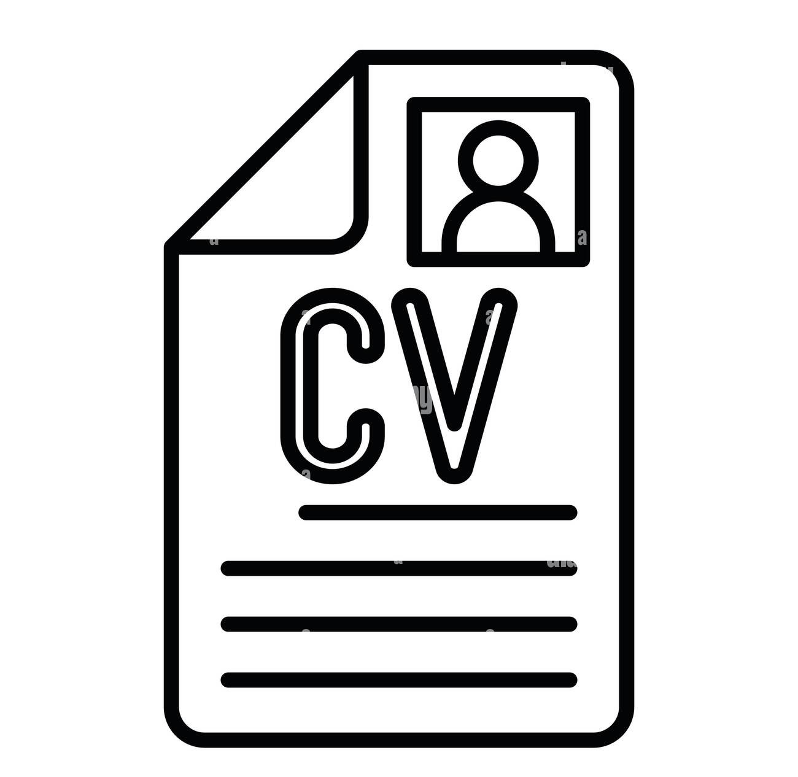
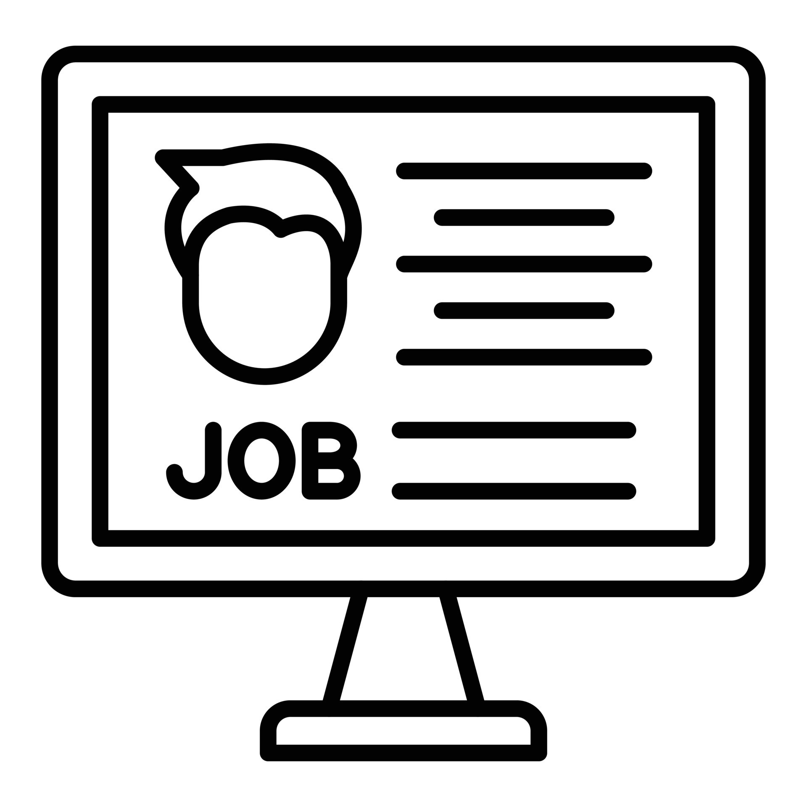
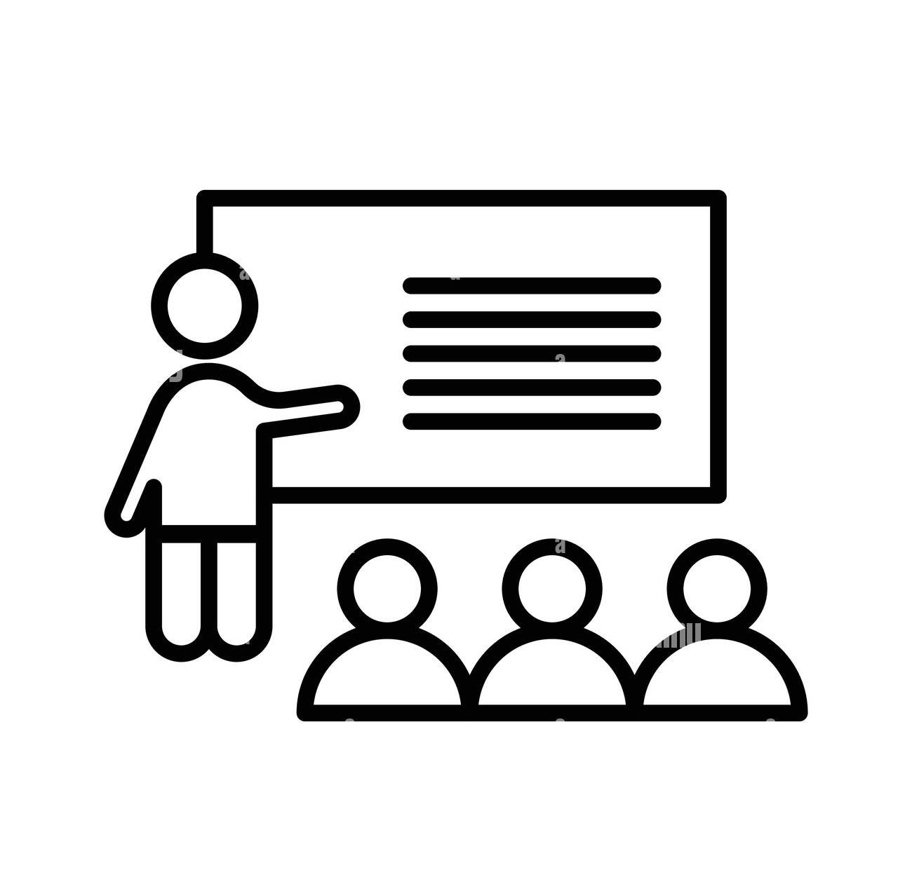

What We Offer
CV Revamping
At Career Sine, we transform outdated, cluttered CVs into polished, professional documents that highlight your strengths and achievements. We know what recruiters are looking for — and we make sure your CV gets noticed. From formatting to powerful wording, we position you as the best candidate for the job you want.
Step-by-Step CV Building
We guide you through every step of creating a standout CV — from gathering your experience to choosing the right format and wording. Whether you’re starting from scratch or improving what you have, we make the process simple, clear, and tailored to your unique skills and goals.
Job Application Assistance
Applying for jobs can be overwhelming — that’s where we step in. Career Sine helps you complete applications professionally and effectively, ensuring your documents match the job requirements and catch the employer’s attention. We guide you on how to submit your application the right way, increasing your chances of getting shortlisted.
Interview Preparation
Interviews can be nerve-wracking, but we help you feel confident and ready. At Career Sine, we coach you on common interview questions, teach you how to communicate your strengths clearly, and practice your responses until you shine. With our support, you’ll know exactly how to impress recruiters and make a great first impression.
Career Coaching
Our career coaching goes beyond CVs and interviews. We work with you one-on-one to build confidence, set career goals, and develop a personalized strategy to achieve them. Whether you’re just starting out or looking to grow, Career Sine’s expert mentorship gives you the tools and mindset to succeed in today’s job market.